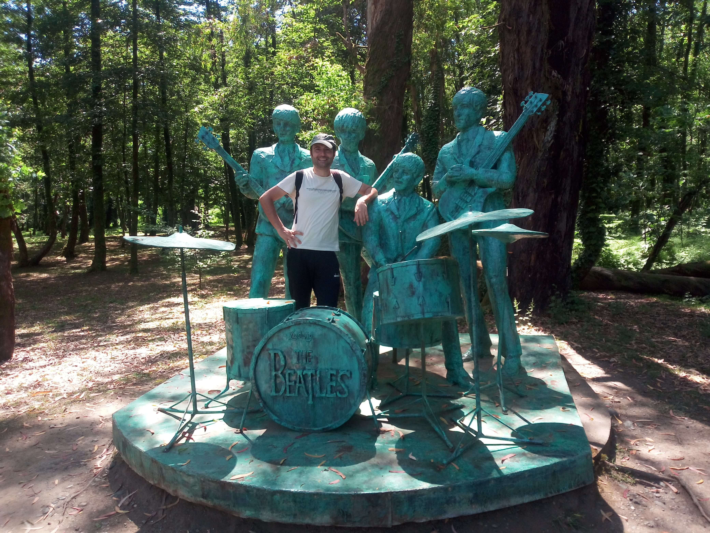

Musicians Park
Along Georgia's Black Sea coast, Musicians Park offers a distinctive outdoor experience where music, art, and nature come together. The park is known for its sculptures of internationally recognized musicians, giving visitors the opportunity to encounter familiar musical figures in an open-air setting. Walking through the grounds feels like exploring a collection of artistic tributes, with each sculpture adding a different character to the landscape. The setting makes the visit particularly enjoyable, combining landscaped paths, greenery, and unusual photo opportunities. It is an interesting stop for music enthusiasts as well as anyone curious about the creative attractions of the Shekvetili area. Beyond the sculptures, the park provides a relaxed atmosphere for a leisurely walk and a chance to discover a less conventional side of Georgia's coastal tourism. My visit here was a memorable opportunity to experience one of Shekvetili's more unusual attractions.
My Photo Gallery
A collection of photographs from my visit to Musicians Park in Shekvetili, Georgia.
View All Photos ↗